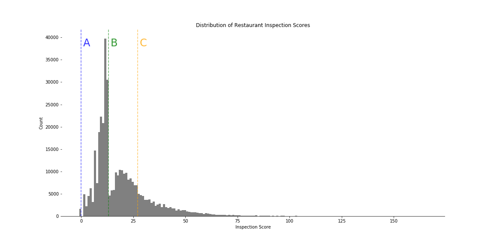

Findings
Prediction Power
Our model was able to accurately flag 625 out 941 restaurants which received two or more critical violations in the test dataset.
The model had a notably high false positive rate, which could be attributed to a biased dataset (See: Data Bias & Policy Implications).

Feature Importance
The most important features in determining the outcomes of our model were: whether or not the restaurant was a chain restaurant, a cafe vs. a full-service restaurant, and whether it had a one-dollar price rating on Yelp. Sentiment scores of Yelp reviews also proved to be important features in the model, which suggests that online platforms can contribute to enforcing health standards.
Data Bias & Policy Implications
A closer look at the distribution of inspection scores reveals a noticable discontinuity at the threshold between scores which yield A and B grades. This deviation from an otherwise normal distribution suggests a presence of bias in the dataset which could be attributed to human error that occurred during the inspection process. This would explain the high false positive rate produced by our model.
Our findings suggest that machine learning has an important role to play in the future of enforcing food health standards. However, optimizing these contributions requires a better scoring system that reduces human error during the inspection process and prioritizes violations which could lead to foodborne illness. Standardizing the way inspections are scored will allow for better predictive power of machine learning techniques and improve the efficiency with which the Department of Health priortizes inspections.